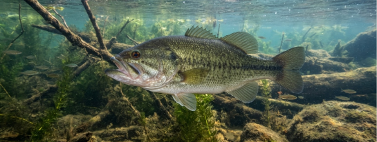
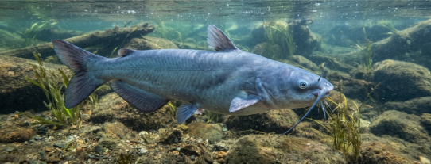
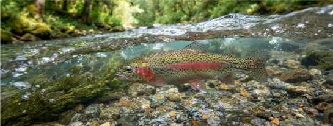
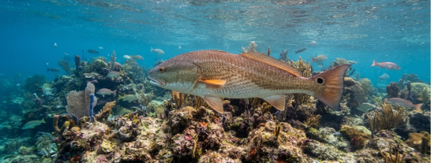
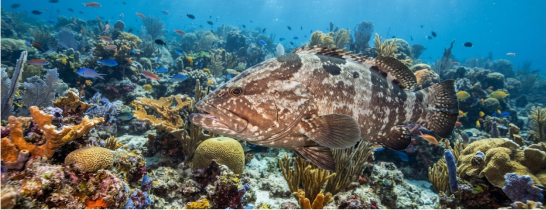
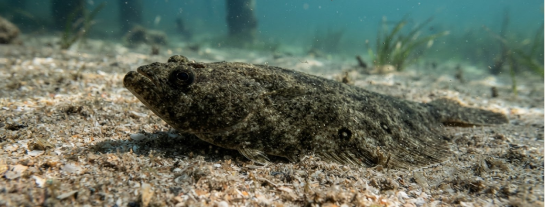

FISH SPECIES OF SC
Explore popular freshwater and saltwater species
found throughout South Carolina and learn where
they live, what they eat, and the best techniques
for catching them.

Largemouth Bass
A popular freshwater gamefish known for aggressive strikes and powerful fights. Found in lakes, ponds, rivers, and reservoirs.

Blue Catfish
A large bottom-dwelling freshwater fish found in rivers, lakes, and reservoirs. South Carolina waters can produce exceptionally large catfish.

Rainbow Trout
A colorful freshwater trout found in cool rivers and mountain streams. Known for its distinctive pink stripe and energetic fights.

Redfish
A popular inshore gamefish found around marshes, creeks, flats, and inlets. Known for its bronze color, distinctive tail spot, and powerful fights.

Grouper
A powerful saltwater fish commonly found around reefs, ledges, and offshore structure. Known for its strength, large size, and aggressive strikes.

Southern Flounder
A popular coastal species that hides along sandy and muddy bottoms. Often targeted around inlets, creeks, bays, and estuaries.